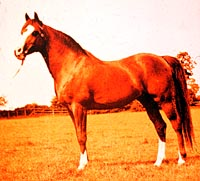
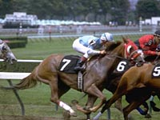
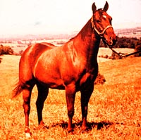
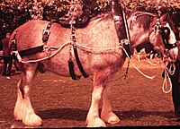
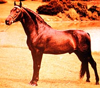
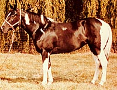
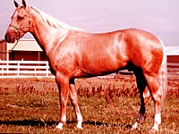
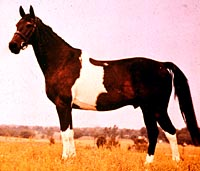

|
|

|
|
|

|
Cave paintings give an indication of the type of horse that existed thousands of years ago.
It is believed that the equid from which modern horses are derived resemble
the modern Przewalski Horse.
The first domestication of the horses was most likely in
central Asia between 3000 and 4000 B.C. These first animals were kept for
meat and milk and later, as pack animals. Eventually, horses replaced oxen as the pulling force of early agriculture equipment; the horse had greater speed. There are several hundred types of breeds of horses. A few of these breeds are common in Saskatchewan.

Appaloosa
The presence of spotted horses in cave paintings has established the Appaloosa as a very old breed. The unique pattern of spots and splashes decorating its coat is as attractive as its personality. The Appaloosa is noted for its gentle disposition making them a poular choice for children and new riders. This breed is used in many categories of competition and for recreational riding. The Appaloosa stands about 15 hands high, and is noted for its speed and stamina.
|

Arabian
History describes the Arabian as a gift from the gods. Years of selection have resulted in a breed with a gentle affectionate nature, with striking beauty. Developed for strength, courage and stamina, the Arabian is remarkably quick and responsive. The Arabian has a head with a characteristic dished profile, large nostrils, long sloping shoulders and a broad chest. This breed stands 14.2 - 15.2 hands high, and weighs between 350 - 460 kilograms. It is sometimes found with a black coat, but most commonly found in grey, chestnut, bay or a roan colour.
|

Thoroughbred
The thoroughbred was originally brought to England from the Middle East. This breed is strong and quick, having lots of stamina. Today, especially in North America, the thoroughbred is commonly associated with horse racing. Very extensive breeding records have been kept for many years adding value to select descendants. The thoroughbred has made horse racing a very expensive and profitable sport. Average 16 hands, the thoroughbred has long slender legs to carry its 450 kilogram body. Its flat forehead, wide set eyes and long, light neck distinguish it from other breeds. Most of this horse's power comes from its hindquarters. The horse has the ability to reach speeds up to 65 km/h.
|

Quarter Horse
The quarter horse is a very common breed, noted for its athletic ability. Its name originates from the ability to run the quarter mile very quickly. The breed developed from crossing Spanish mares with English stallions. The quarter horse has established itself as good for pleasure riding, and for working with livestock. Commonly found with a chestnut coloured coat, most solid colours are acceptable in this breed. The quarter horse stands approximately 15 hands high and weighs 450 - 550 kilograms.
|

Clydesdale
The Clydesdale is one of the most popular breeds of heavy draft horses in the world. Originating from Scotland, this breed was used as a source of power for farming, mining and heavy hauling jobs. It has a wide muzzle, large nostrils and big ears. Its long neck and short back contribute to its muscular look. Standing 16.2 - 18 hands high and weighing 725-820 kilograms, it towers above horses known for light riding. The Clydesdale has a solid coloured body, most commonly bay, black brown or chestnut. The solid colour is accented by four white socks to the horse's knee.
|

Morgan
This breed was developed in the United States. It stands 14.2 - 15.2 hands high, and weighs 450 - 550 kilograms. The Morgan is a gentle breed known for its stamina and vigor. It is commonly seen in chestnut, bay or brown colours; palomino, buckskin and grey are also permitted. White or spotted coats are undesirable in this breed.
|

Paint
This is another breed developed in the United States and made famous by the movies. The Paint has established itself as a quality pleasure riding horse, also as a show horse and working horse used in ranching, and rodeo events. This breed has a very colourful coat pattern, and is stocky and very muscular. The paint is usually seen as a white body with any combination of black, bay, brown, chestnut, dun, grulla, sorrel, palomino, gray or roan spots.
|

Palomino
The Palomino breed was established in America, but is a descendant of horses brought from Spain. This breed is golden in colour with a white or light coloured mane and tail. It stands 14 - 16 hands high and weighs 450 - 550 kilograms.
|

Pinto
The Pinto horse is a color breed in contrast to most other breeds which are defined by their genetic ancestry. The breed comes from many different breeds, their origin is variable. Pintos have a dark background coloring with random patches of white. In the American west, the Pinto has traditionally been regarded as a horse the American Indian favored as a war horse since its coloring provided a natural camouflage.
|
|
|
|
|